Open-source governance, risk, and compliance
Risk and compliance people actually keep current
RiskWren is one connected register of what an organization has, what could go wrong, what it must comply with, what it does about both, and the proof. It is built first for the security team: frameworks, assessments, findings, and exceptions are the path it gets right before anything else.

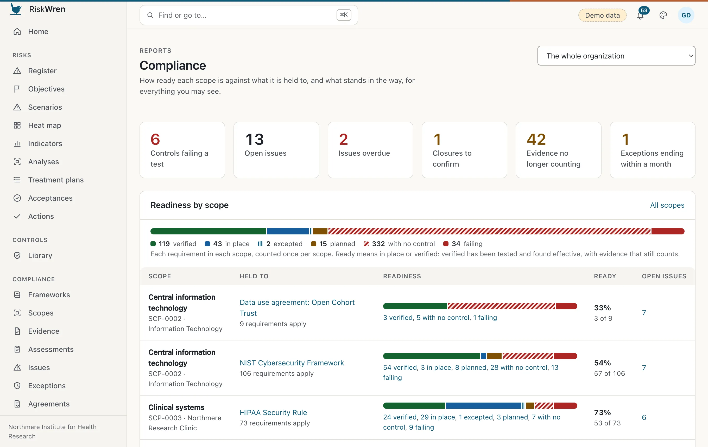

Test once, satisfy many
A control is described once, mapped to every requirement it answers, and tested once. The result shows in every framework and every scope that relies on it.
Worked out, never typed in
Readiness comes from tests and evidence that still count. Saying a control is in place never makes it verified, and what was verified decays by itself.
Nobody marks their own work
A second person confirms a test result, the closure of an issue, and an exception. The server refuses anything else, whatever the role.
Passive by design
No scanners, collectors, or agents, and no access to anything else on the network. It records what people know and decide.
Readiness
Where you stand against a framework, with the reason
A scope is a boundary held to one or more frameworks. Each requirement that applies in it is in exactly one of six states: verified, in place, excepted, planned, gap, or failing.
Each control that answers it carries a sentence saying how it came to be there. When a central team's control fails a test, every scope that inherits it shows the failure the same day.


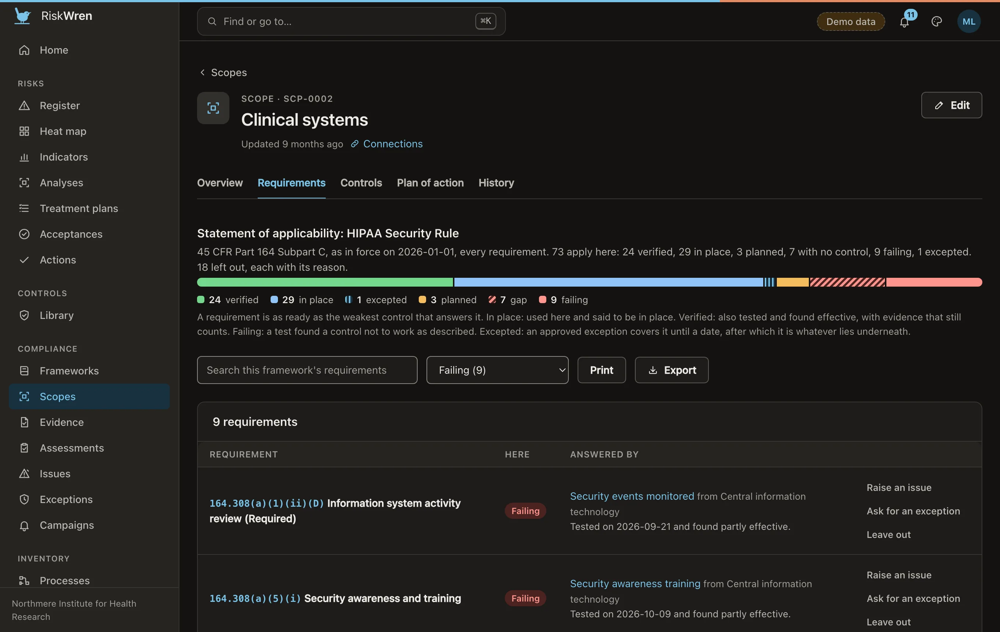
Assessments
A result counts when a second person confirms it
An assessment plans a test for each control a scope does itself. Nobody records or reviews a result for a control they own, and whoever recorded a result cannot confirm it.
Once confirmed, the result becomes the control's rating, moves every requirement the control answers in every scope that relies on it, and moves the residual rating suggested for every risk it reduces.

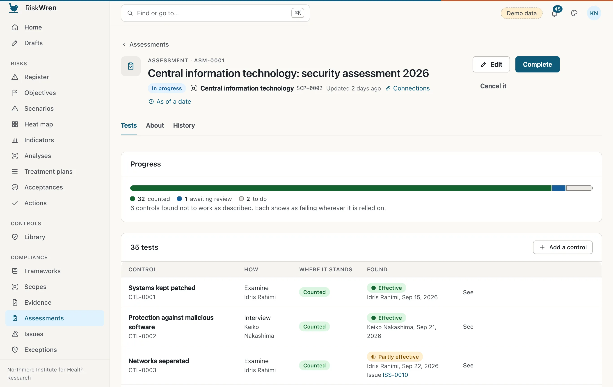

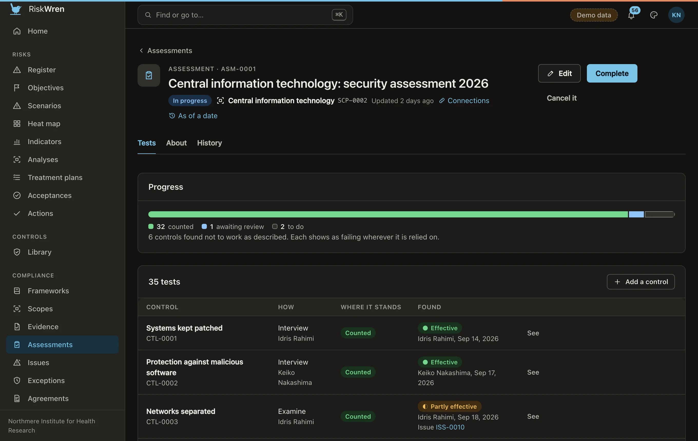
Issues
Every finding in one register, each with a date
A failed test opens an issue for the control's owners without anyone asking. Penetration tests, audits, incidents, and gaps go in the same register.
Severity sets the date. Moving it needs a reason and stays on the record. An issue closes only when someone who does not own it confirms it was put right.


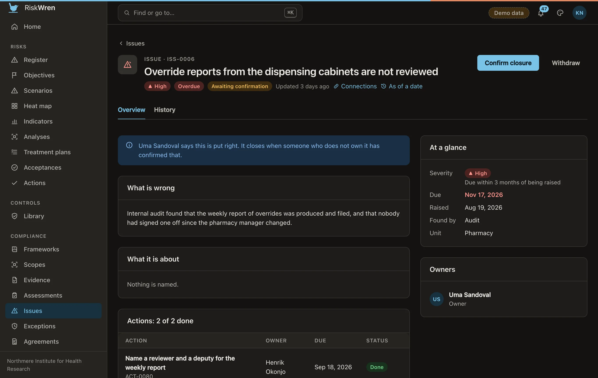
Exceptions
Exceptions that end by themselves
When a requirement cannot be met yet, the honest answer is an exception: why, what is done meanwhile, and the dates it runs between. Whoever asked does not decide.
While it is in force the requirement shows as excepted, with the state underneath beside it. The day after it ends, that state is back. Nothing has to run for that to happen.


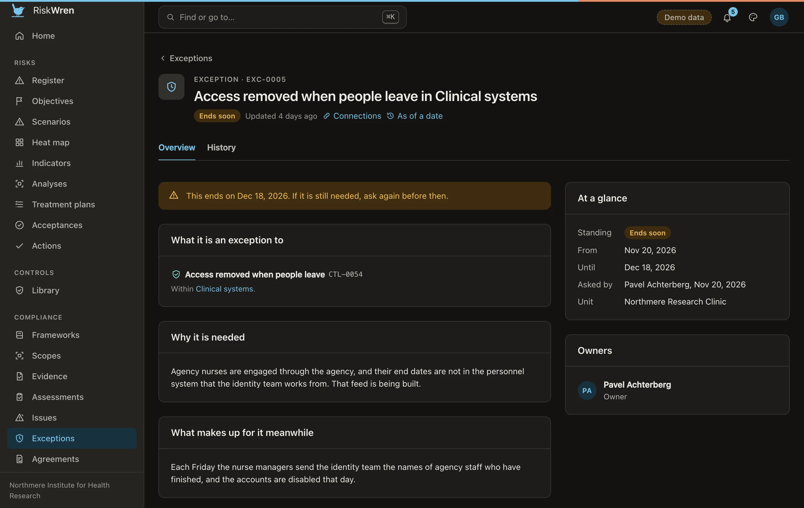
Connections
What is this connected to?
In an incident or a review the questions are always the same: what does this system support, which scopes is it in, what controls stand in front of it, and what is already known to be wrong with them.
Every record opens to a picture of what it is joined to, with a list beside it that says the same in full. All of it works from the keyboard.

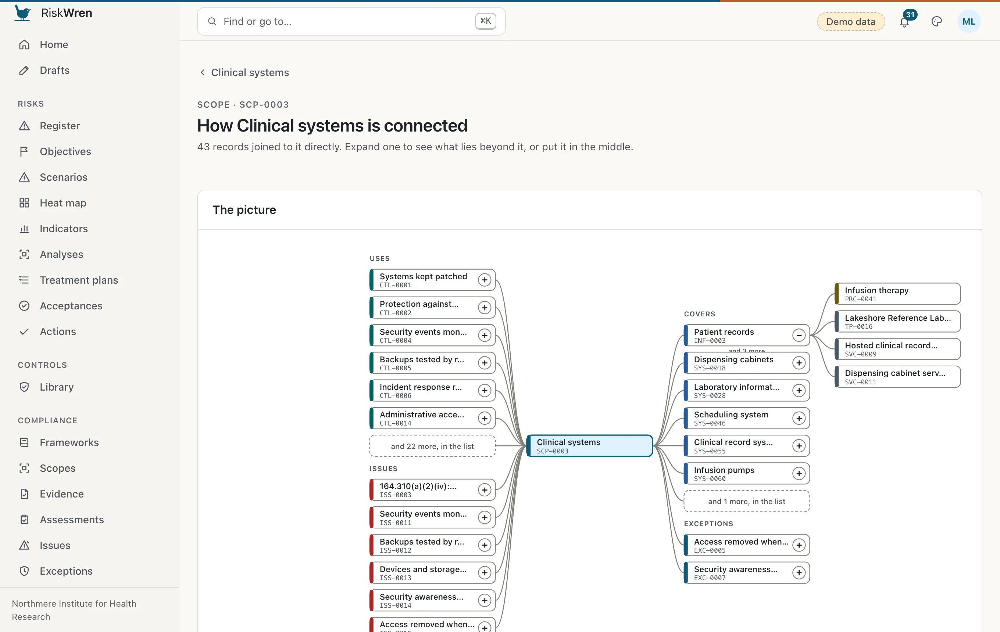

Risk
Ratings you can read, decided by named people
Likelihood and impact have five levels, each with a written definition. Inherent, residual, and target ratings are judgments by named people, with reasons.
The controls linked to a risk suggest a residual rating, and the suggestion opens to the arithmetic behind it. When a test moves it past the rating on record, the risk is flagged and its owner is asked to assess again.

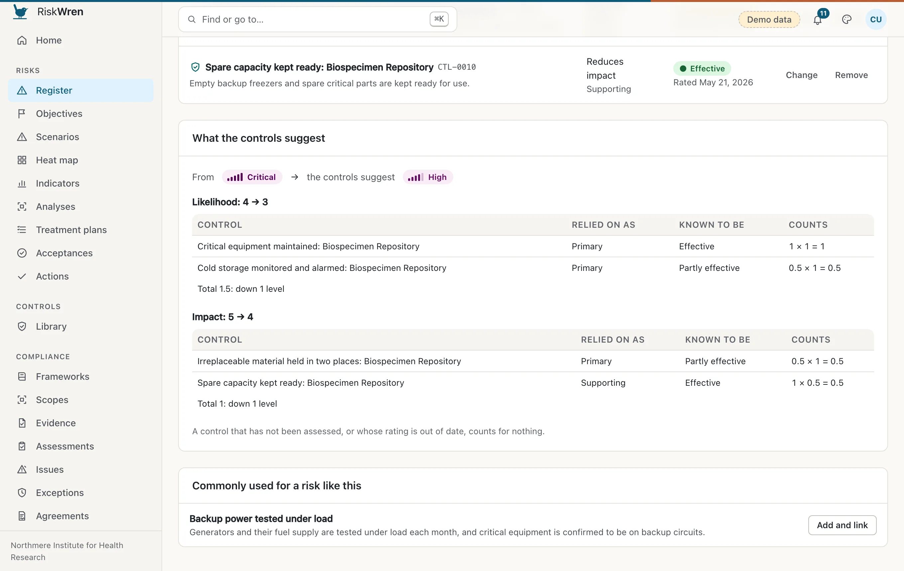

Home
One page of what each person owes
Most people who own a risk, a control, or an action are not risk professionals. Home lists what is theirs to do, each item a short task: a test to record, a result to confirm, an issue to put right, an exception about to end.
A security leader's Home starts with the figures that cannot wait, such as controls failing a test and issues past their date, then the decisions that are theirs to make.


Keeping watch
Ask the owners, and see who has answered
A campaign asks every control owner to attest, every risk owner to look again, or for a named piece of evidence, by a date. Its page shows who has answered, unit by unit, and reminds those who have not.
What an owner says of a control is shown apart from its rating. It never makes a requirement verified, and it takes one out of verified when the owner says the control no longer operates.


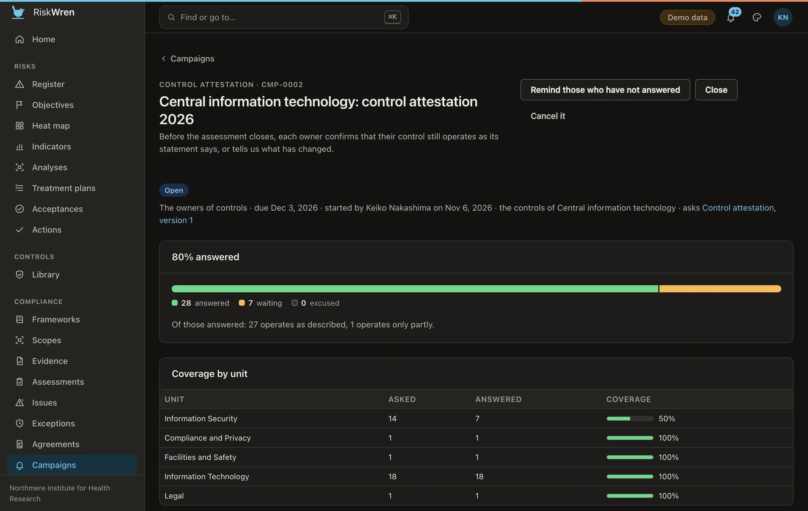
Early warning
A number that warns before the risk arrives
An indicator is a number someone already reads: servers patched within thirty days, days to remove a leaver's access. Give it a warning level and a limit, and record what it stands at.
Past the limit, its owners and the owners of every risk it warns of are told, and those risks are marked for another look. Nothing is fetched: a person reads the number and records it.

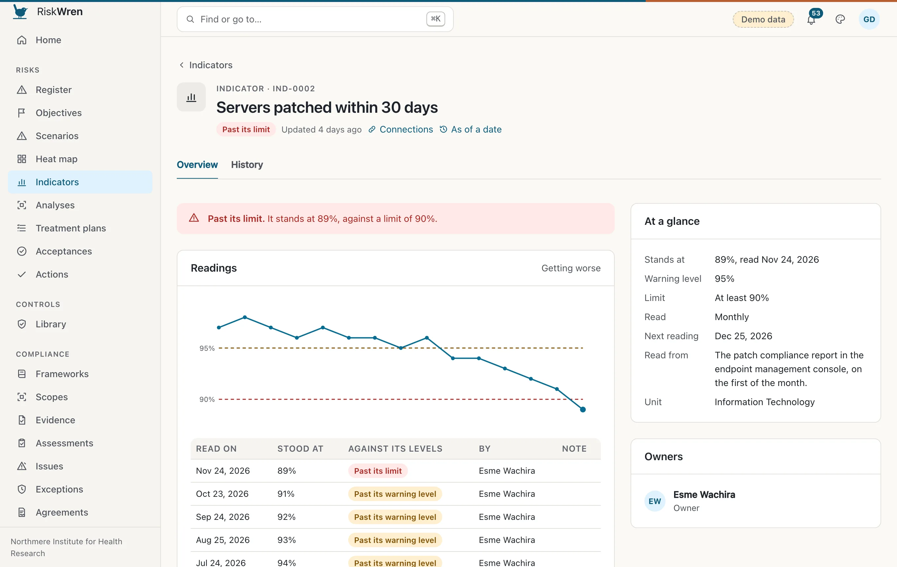

The program
See what a change would do before you make it
The matrix, appetite, and the review cadences are edited in the app. A change is held as a draft, and a preview lists every open risk whose rating, standing, or next review would move.
The preview is the change itself, made and undone, so publishing changes exactly the risks it listed. Judgments already made keep the rating they were given.


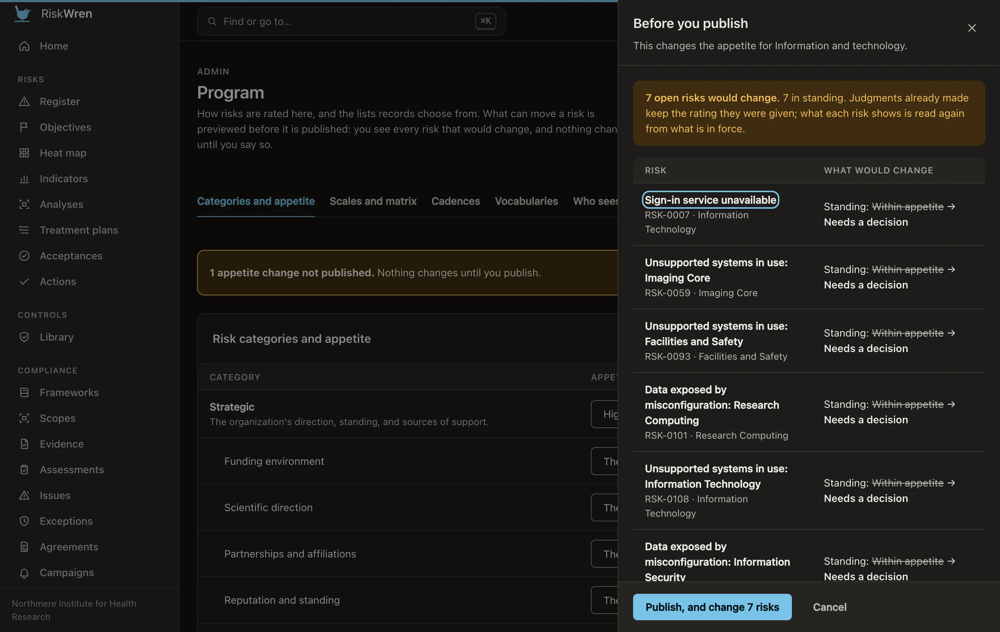
Risk analysis
Each thing against each threat, with a report
A risk analysis takes what is in a scope and a list of threats, and asks of each pair whether it applies. The answer is that it does not, that a risk on the register covers it, or that a risk is raised for the thing's owner.
It closes when every question has an answer. What it considered, what was decided, and why stay on record as its report.


Policies
Approved by named people, and never altered
A policy, standard, procedure, or guideline is written here, linked to where it is kept, or attached as a file. A new version goes to the people who must approve it, none of whom wrote it, and is published once every one of them has.
A published version is never changed. Its fingerprint is in the history, and riskwren verify checks it. Any two versions compare side by side, and each document comes up for review on a cadence.


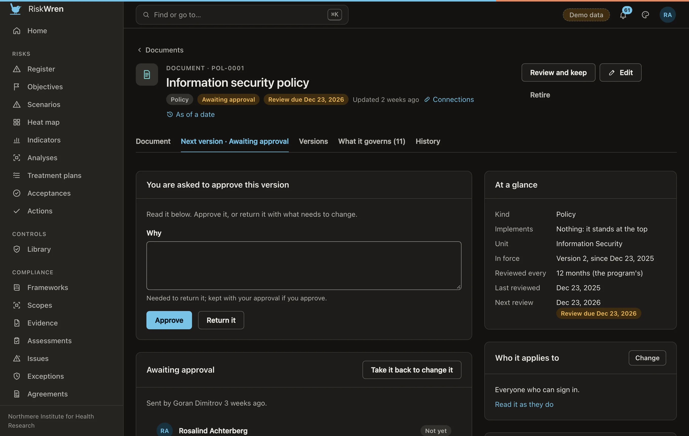
Acknowledgment
Read by the people it applies to, and acknowledged
Everyone has a library of the documents that apply to them, readable on a phone. A document that asks to be acknowledged stays on each person's Home until they have; a new version asks again, unless its author says the change does not need it.
Who has and who has not is shown by unit and by person, and a campaign chases the rest by a date.


Agreements
What you promised others, with its dates
An award, a data use agreement, a business associate agreement: each with its parties, its dates, and its notice period. The terms it imposes reach every scope that holds what it covers, which says why it holds them.
Its owners are told before the last day to give notice and before it ends. One that has ended stays open until it is renewed or closed.

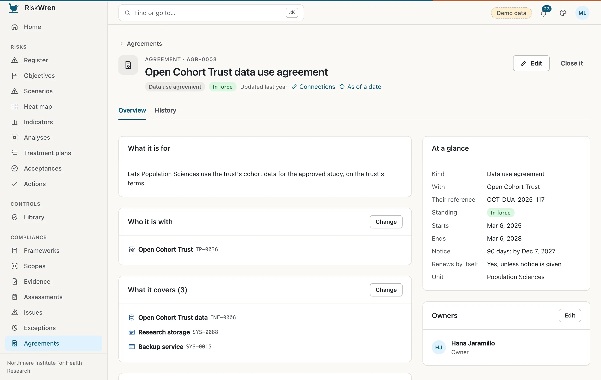

Framework updates
A new version beside the old, and what changed
A framework's new version is loaded beside the one in use, and nothing that uses the old one changes. What changed is listed by code, with the words that differ, and where the publisher says each withdrawn requirement went.
A scope moves when its keepers say so, taking its decisions and exceptions with it where the code is unchanged.


Internal audit
Internal audit on the same record, with its independence kept
The universe ranks everything worth auditing from the register, with its working shown. Engagements are planned, approved, and carried out with workpapers signed off by someone other than their preparer, and until the report is issued, the work is the audit team's alone.
Findings land in the one issue register, with management's action plan, and internal audit confirms them closed. An outside auditor can be given one engagement, read-only, with every look recorded.


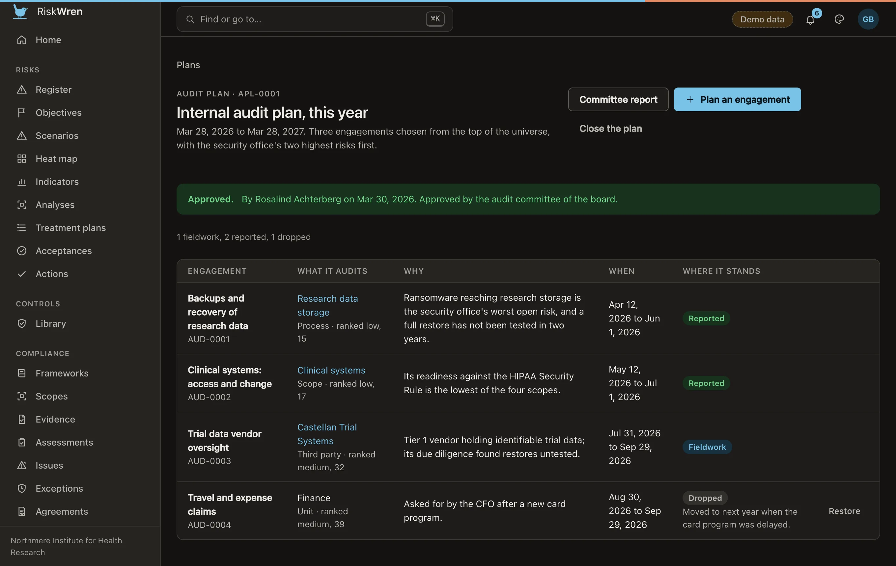
Leadership reports
A report to leadership that can be shown to be the one given
The top risks and how each moved since the last report, appetite, posture by framework, the suppliers with most at stake, the measures against last time, and what is overdue, with the issuer's own summary.
Issued, it is frozen with a fingerprint the history records. It reopens exactly as it was, whatever has happened since, and says whether it still verifies.

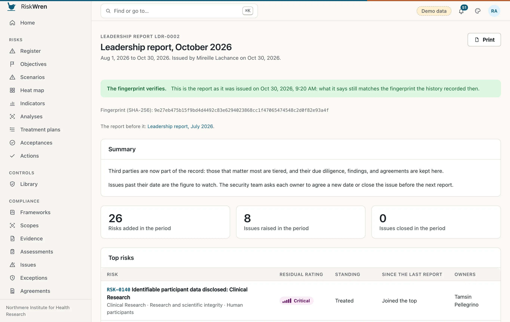

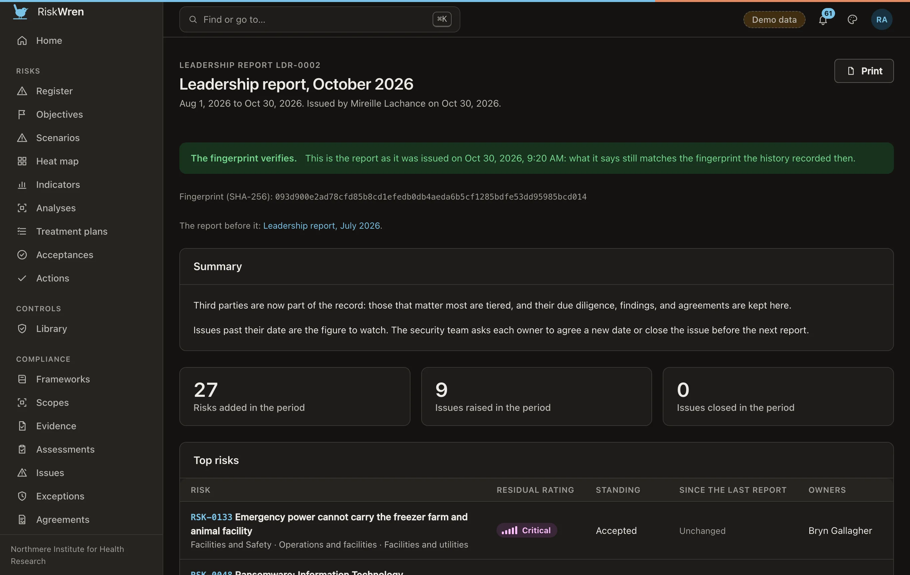
Risk in numbers
What a year of a risk could cost, and how sure that is
For the risks worth a figure, how often a year and what each time costs, as ranges with what they assume. A simulation of ten thousand years says the average, the loss exceeded one year in ten, and the chance of passing each figure, the same every time it is run.
A scenario adds up the risks it touches, and every risk's bow-tie shows which controls stand before the event and which after.


Committees
A committee's decision, on the record it was about
A session's agenda is drawn from the register: the risks above appetite, an exception, a policy waiting for approval. The decision on each item is recorded with it, shows on the record it was about, and is told to that record's owners.
Strategic objectives connect the register to the plan: each lists exactly the risks that threaten it.

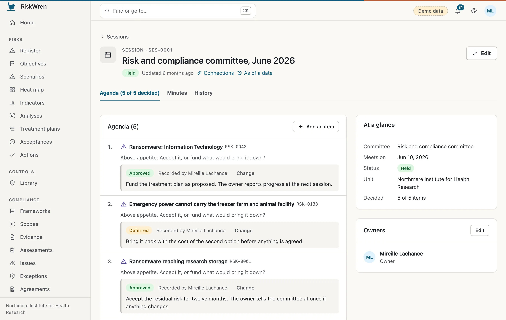

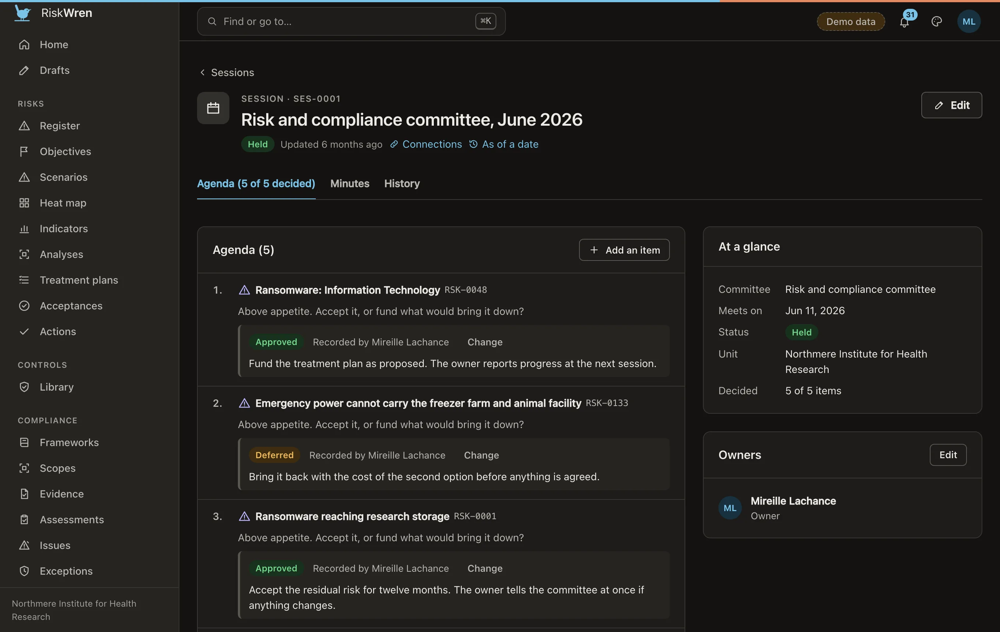
Third parties
Every supplier tiered by your own rules, with the reasons
A supplier's services say what it reaches and handles. A few questions, answered mostly from the inventory, give its tier by the program's rules, and every reason that applied is shown.
The tier is a judgment by a named person: a different one from the rules' needs a reason, and both are kept. The tier sets how often the supplier is reviewed.


Due diligence
A security questionnaire, without giving anyone an account
The questionnaire the tier names goes to the supplier's contact through a link that expires. Only a digest of it is kept, it travels where no server logs it, and it opens that one form and nothing else.
The answers that are concerns are listed first, and the reviewer records what was concluded. A concern becomes a finding, followed up with the supplier's own people.


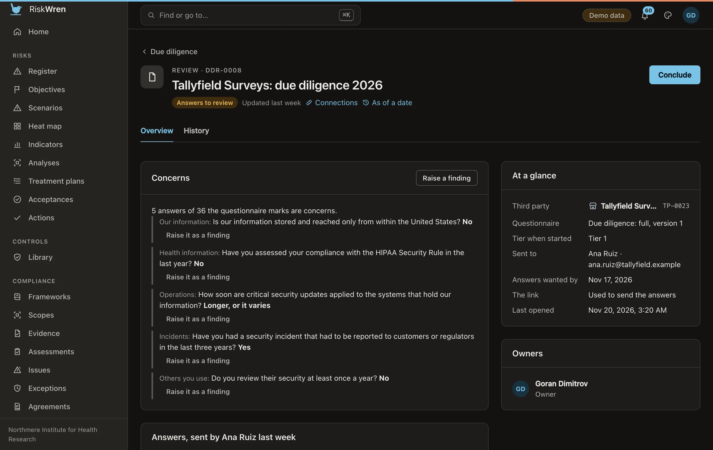
Assurance
What a SOC 2 report actually covers
Reports and certificates are kept with their period and expiry, and read for what they cover: the services in scope and those not, the carve-outs, the exceptions noted.
What a report leaves to the organization is joined to the control that does it, and that control's page says a supplier's assurance leans on it.

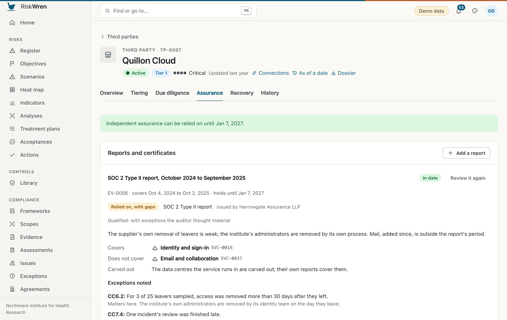

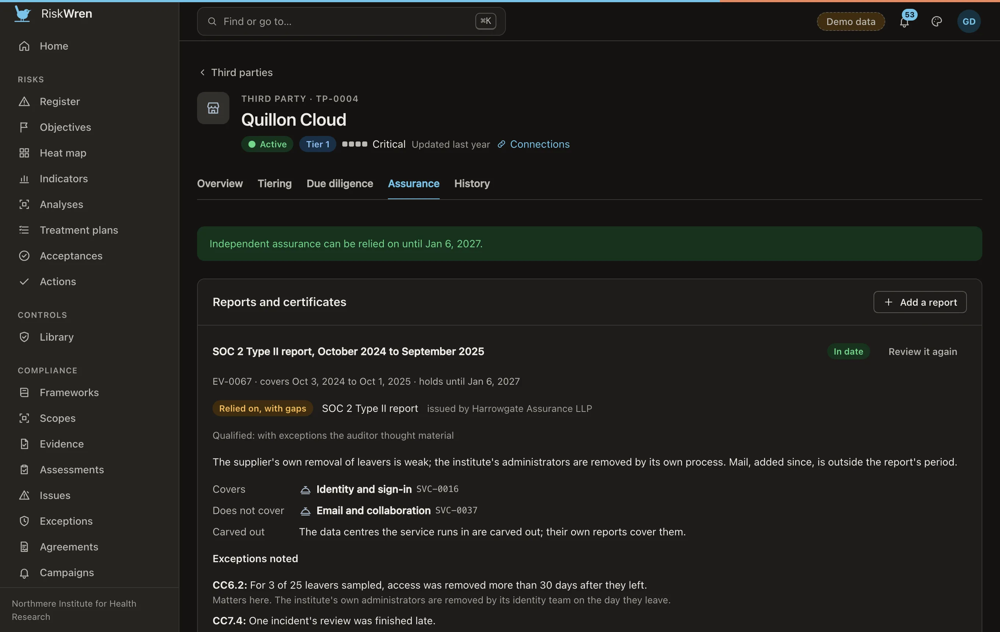
Coverage
A stop wherever the paper is missing
The program says which agreements shared information needs: a business associate agreement for patient records handled for you, a data use agreement for controlled-access data.
Where information is shared and no such agreement with that supplier covers it, the information, the supplier, and the service each show a stop, until one does.


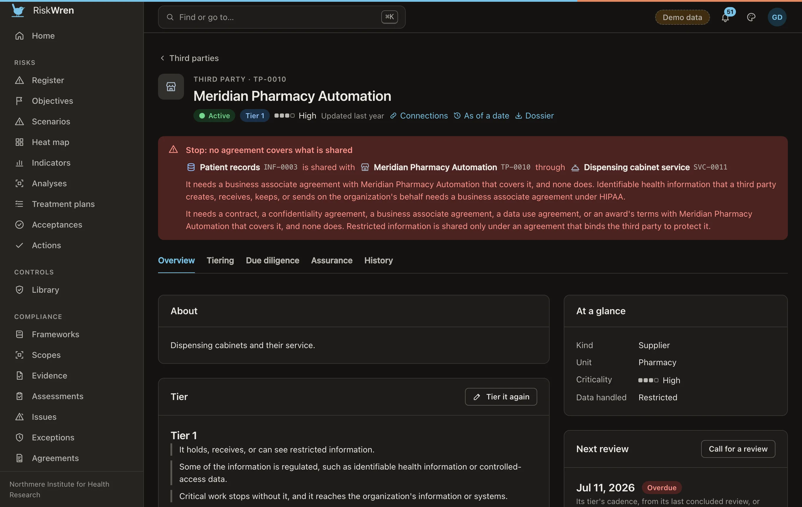
Also in it
Frameworks as published
NIST CSF 2.0, SP 800-53 Rev. 5 with its baselines, SP 800-171 Rev. 3, and the HIPAA Security Rule arrive loaded, and SP 800-53 Rev. 4 is there for programs that still name it. An agreement's terms or an internal standard is entered as a framework of your own.
Inherited controls
A central team runs backup and identity once. Other scopes inherit those controls, and see a failure the day the provider's test finds it.
Evidence that stops counting
Evidence is collected once and attached to everything it supports. Past its date it stays on the record and counts toward nothing.
Working on the first day
A risk taxonomy, a scoring method, 57 common risks, and 75 common controls come with a new installation. The security controls among them arrive mapped to about three quarters of each framework.
A history that holds
Every change is in an append-only, hash-chained log, with who made it. An auditor reads everything and changes nothing.
Rating and standing
How much is at stake, and whether it is in order, are always two signals. Neither is told by color alone.
In and out
Every list exports as CSV or JSON. Records come in from a spreadsheet, with a dry run that reports every problem by row.
Who sees what
Roles are held over units. A figure never counts a record its reader could not open, and evidence is more closely held than the register.
Sign in your way
Local accounts out of the box. Optional single sign-on by OpenID Connect, built to work with Microsoft Entra ID, with roles and units taken from the provider.
It knows what is due
Whoever a thing is waiting on is reminded before its date and when it passes, then their steward, then their leader. Email is optional.
Found, and kept in order
One search across every kind of record, saved views of any list, what each record is missing, and likely duplicates. When someone leaves, nothing is left without an owner.
Open and yours
Apache 2.0 with no paid edition. SQLite on a laptop or PostgreSQL on a server, five runtime dependencies, and your own name and colors.
Try it
You need uv, which provides the right Python. Clone the repository and build the demo organization: a fictional research institute with a clinic, two years of history, four scopes held to frameworks, an assessment in progress, evidence going stale, issues and exceptions at every stage, policies being read and acknowledged, agreements with their dates, a risk committee, and suppliers tiered, questioned, and covered, or not.
git clone https://github.com/robert-mcdermott/riskwren.git
cd riskwren
uv sync
uv run riskwren demo
uv run riskwren --config demo/riskwren.toml serveOpen http://127.0.0.1:8020. The sign-in page offers ten sample people and asks for no password. Start as the security leader. Explore the demo organization says who to try next, and Getting started sets up an installation of your own.
The guides
Where it stands
These pages describe version 0.7.0: the register, compliance, the means of keeping both current, the organization's policies and agreements, its third parties, the record read back as measures, reports, and packages that prove themselves, and internal audit's own work on it. It signs in with local accounts or, if you set it up, single sign-on, and sends email only if you ask it to. Incidents and resilience come next. The roadmap says what comes in what order, and the changelog lists what is in each release.